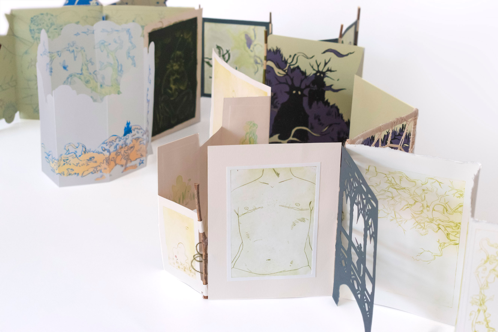
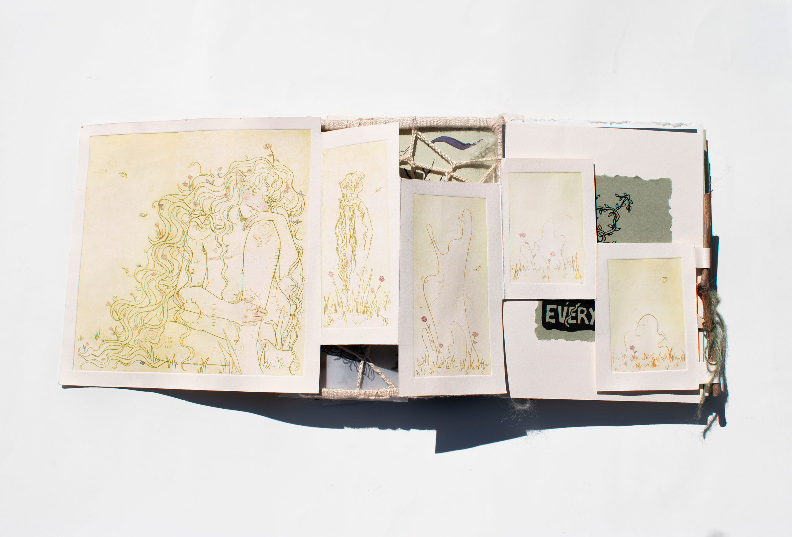
 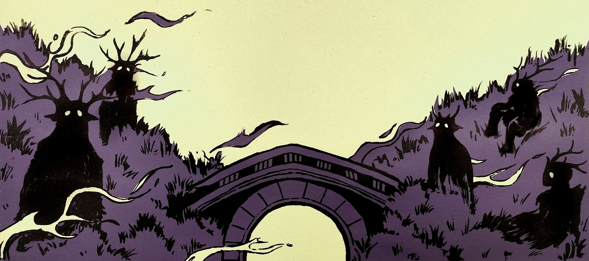
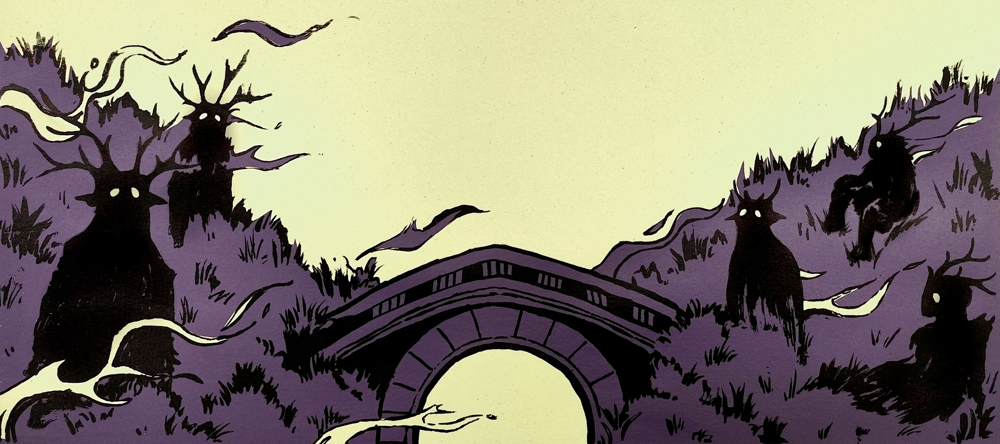

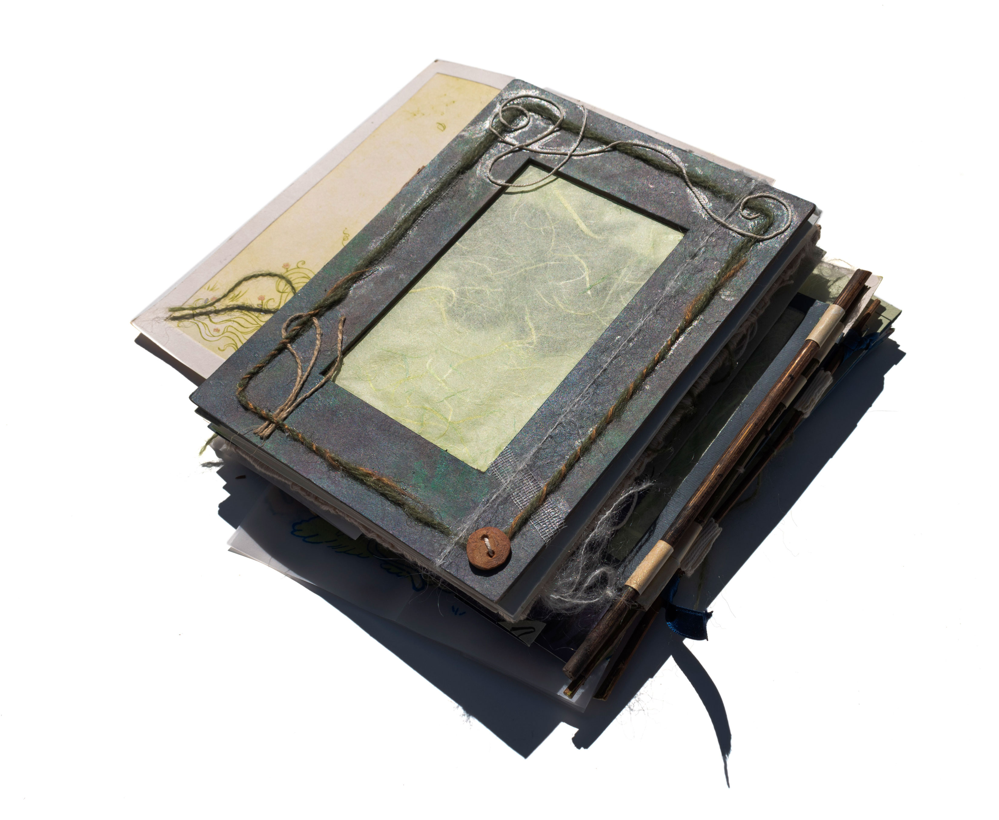
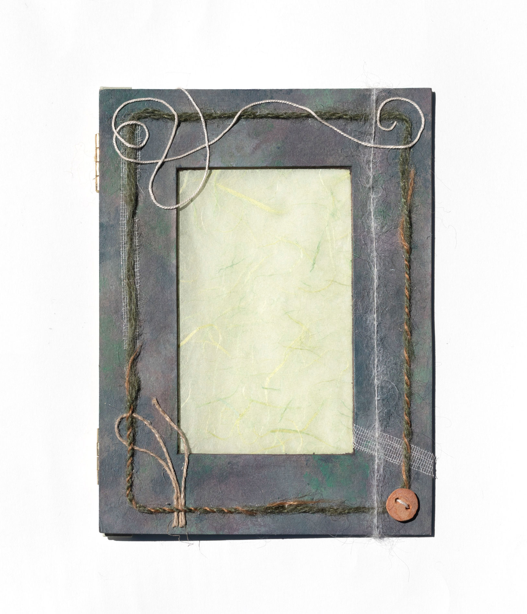
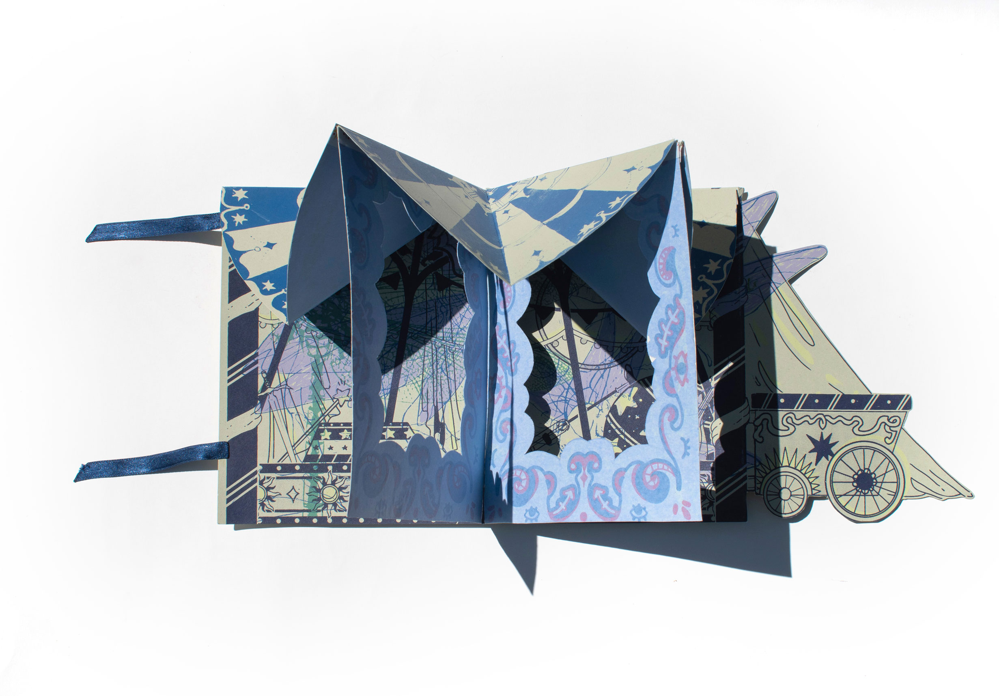
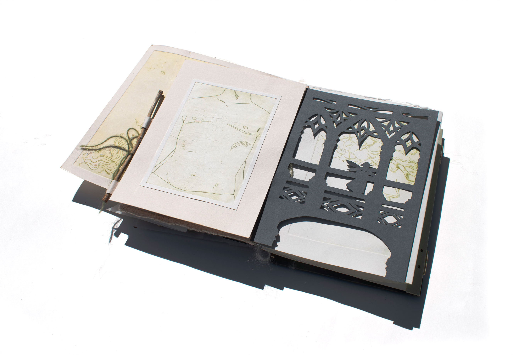
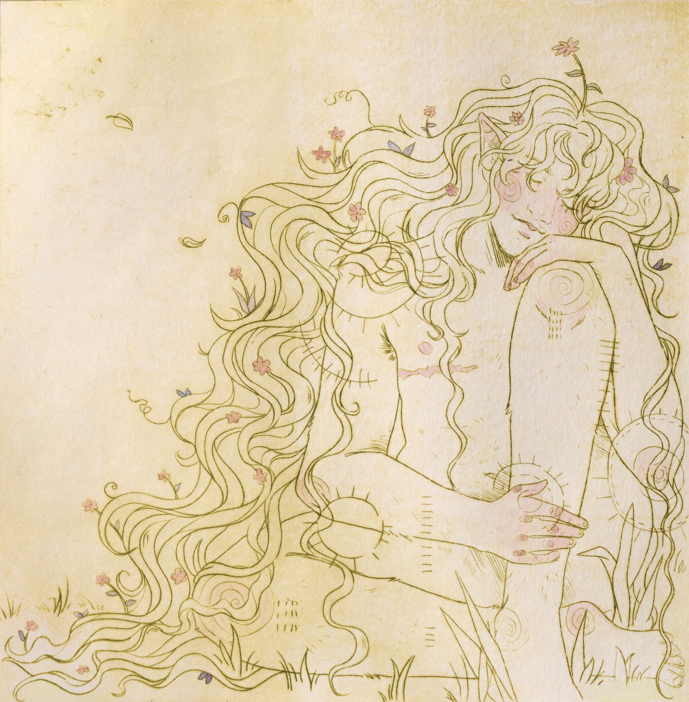

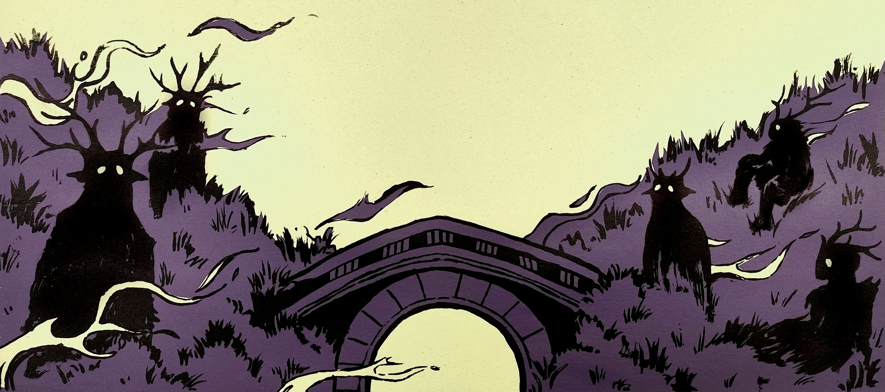
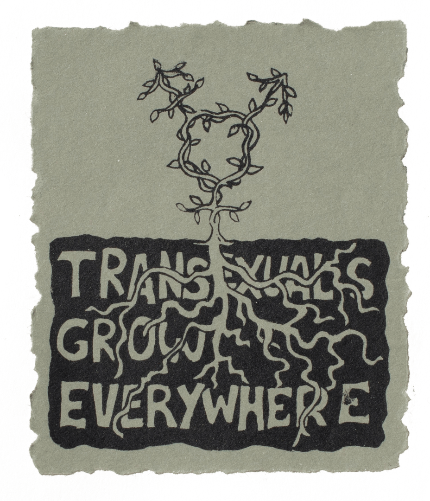
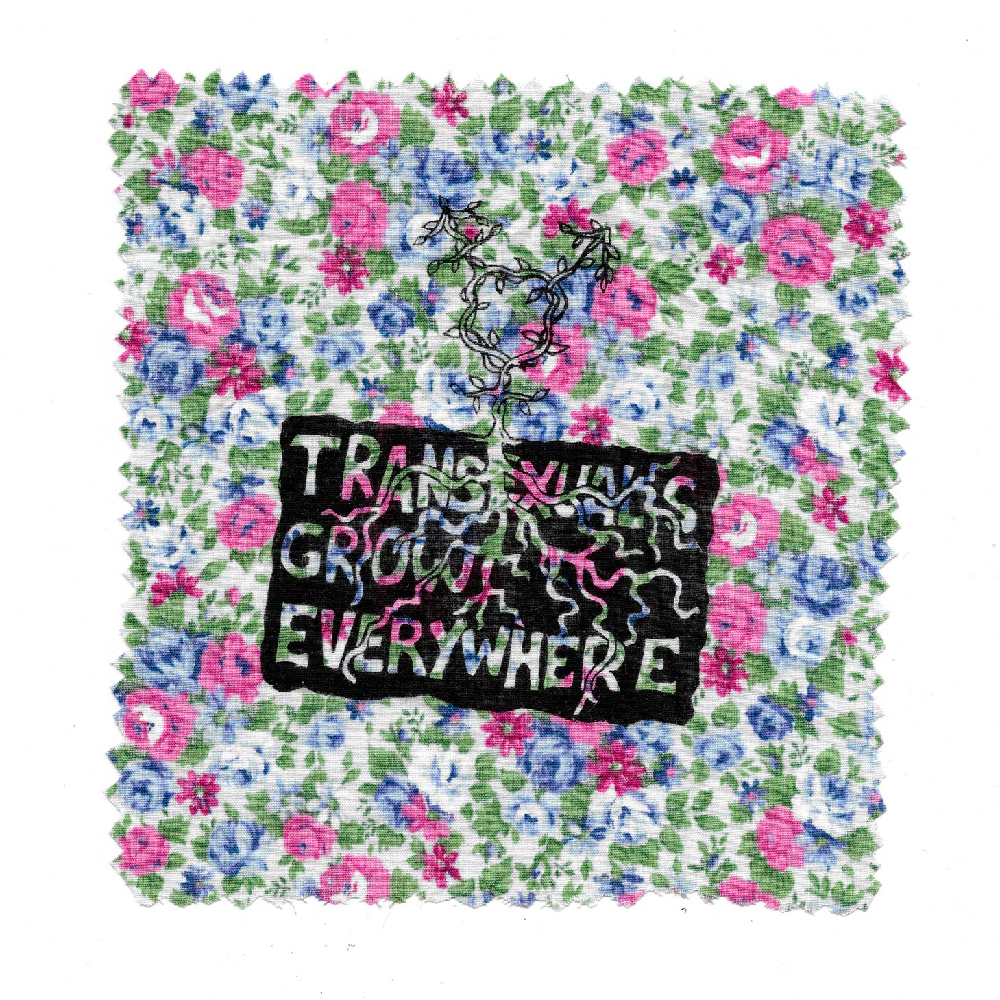
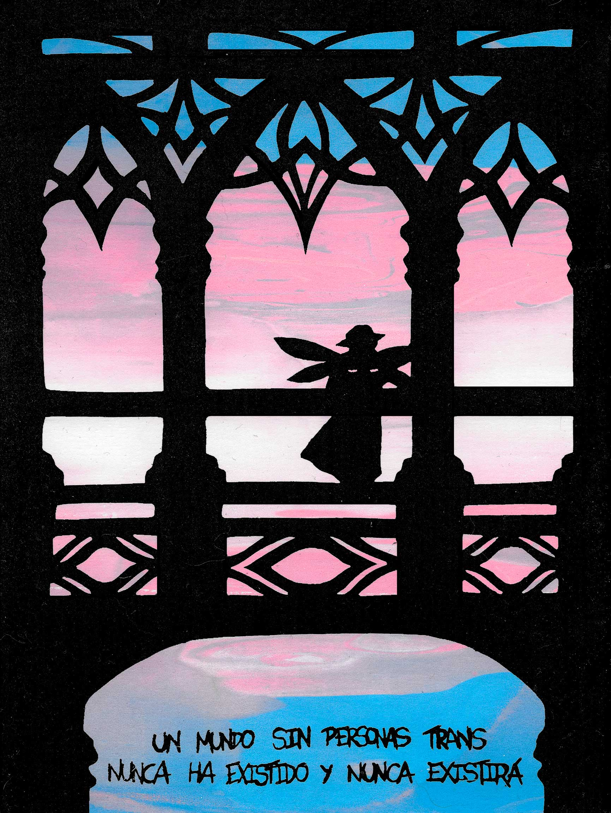

EDITORIAL//
FAE
Este libro de artista trata sobre mi experiencia como persona trans que nunca se ha sentido muy persona y cuyo mayor deseo siempre ha sido escapar al bosque con las hadas donde todo puede ser diferente.
TIPO
LIBRO DE ARTISTA
DESCRIPCIÓN
Instalación compuesta por de 25 estampas (serigrafías y puntasecas sobre acetato, iluminadas con acuarela, dibujadas a mano y mezclando técnicas como el recorte y lo textil), expuesto desplegado a modo de laberinto.
TAMAÑO
20 x 15 cm